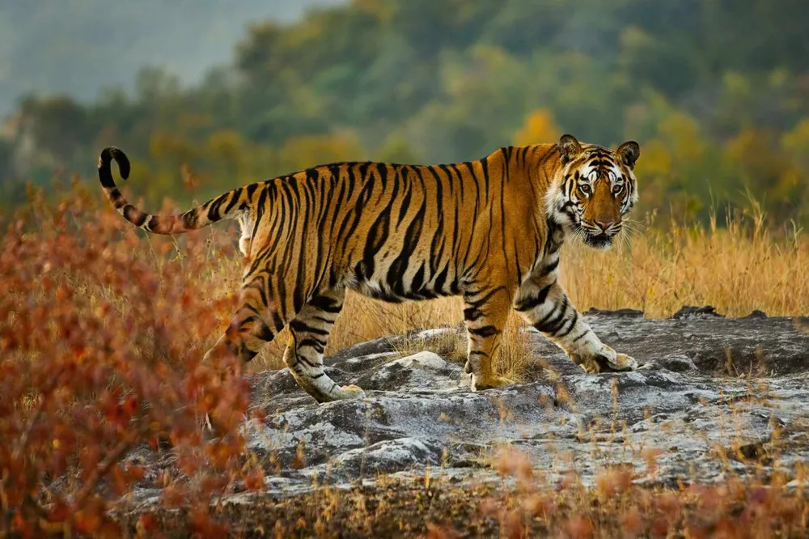

 아시아에 서식하는 식육목 고양이과의 포유류. 고대부터 인간에게 경외의 대상으로서 상징성이 높은 동물이었다. 특히 아시아에서는 서양, 중동, 아프리카에서 사자가 차지하는 상징성을 그대로 부여받아 문화적인 중요성이 압도적이다. 이러한 높은 위상 덕분에 가장 유명한 동물이자 맹수라고 부르는 사자와 쌍벽을 이루는 육식동물 중의 하나이다.
대한민국에서는 나라 자체를 상징하는 동물이다. 이름에 '범' 또는 '호'가 들어가는 사람도 많고, 빠른 몸놀림에 빼어난 지혜와 늠름한 기품을 지녔다 하여 산군(山君), 산령(山靈), 산신령(山神靈), 산중왕(山中王)으로 불렸다.
가장 큰 고양잇과 동물로 지역에 따라 크기 차이가 다양하게 나는데, 동아시아 및 네팔의 호랑이들은 동남아시아의 호랑이보다 2배나 크다. 전체적으로, 수컷의 무게는 일반적으로 100~220kg, 암컷은 70~200kg 정도 나간다. 300kg에 육박하거나 넘는 거대한 개체도 가끔 보고된 적이 있다. 몸길이는 2m 내외이며 꼬리 길이만 1m를 넘는다.